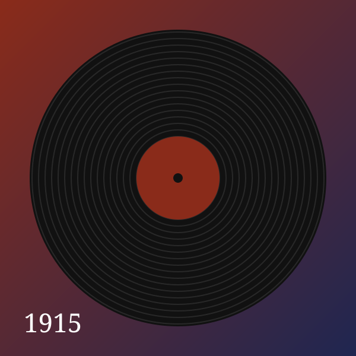

吉田奈良丸, “矢頭右衛門の誠忠” (Victor catalogue, 1915)

Background: A 2015 Kobecco historical feature places 矢頭右衛門七 in the Ako-retainer revenge tradition: his father joined the revenge pledge, and the son is represented as taking up the cause after his father's death. This is useful secondary narrative context for the title’s “loyal fidelity” framing, but it does not establish the exact text performed on these four sides.